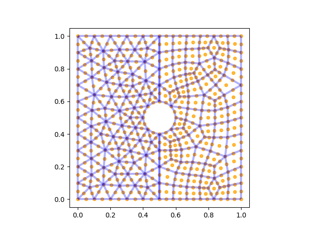
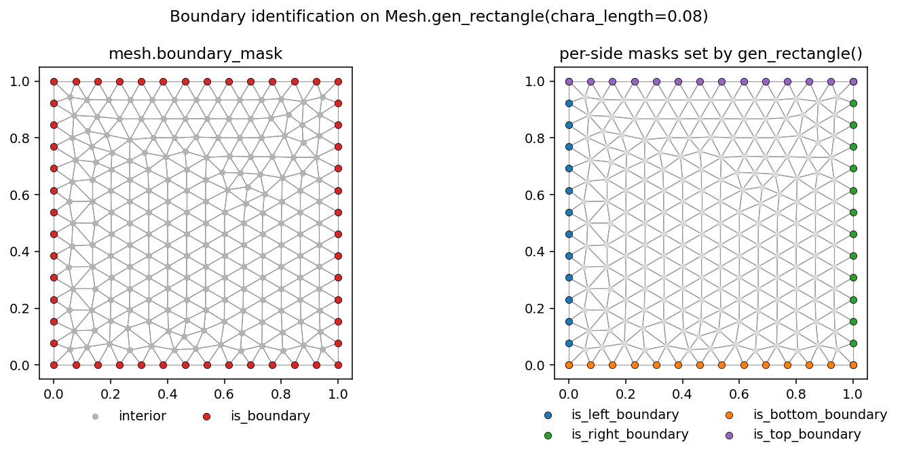
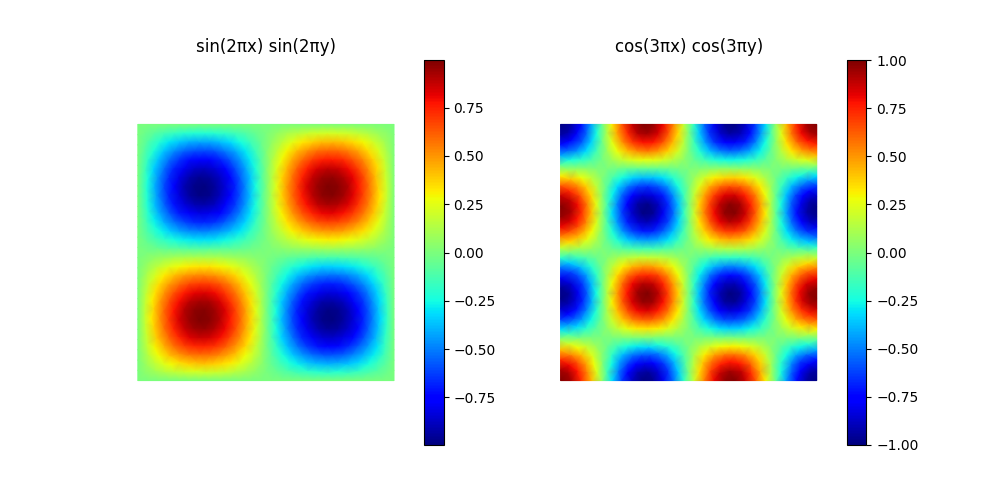

网格¶
Mesh 是 TensorMesh 中每个问题的几何与拓扑基础。它保存了节点、一种或多种单元类型的连接性，以及附加在其上的任何逐节点或逐单元数据。由于 Mesh 继承自 torch.nn.Module，你可以用 mesh.to("cuda") 将其移动到某个设备上，用 state_dict 序列化它，并让 autograd 追踪通过其张量的一切梯度。
Mesh 数据结构¶
每个网格都公开相同的六个属性：
属性 |
类型 |
形状 / 内容 |
|---|---|---|
|
|
|
|
|
以单元类型为键（例如 |
|
|
逐节点字段。以 |
|
|
逐单元字段，先按单元类型再按字段名嵌套。 |
|
|
网格全局元数据（少见）。 |
|
|
meshio 风格的命名子集，在往返读写时保持原样不作解析。 |
由于 cells 是一个字典，混合单元网格（三角形 + 四边形、四面体 + 六面体……）是一等公民。遍历 mesh.cells.items() 会依次给出每个单元块。
有用的属性：mesh.n_points、mesh.n_elements、mesh.dim（= mesh.points.shape[1]）、mesh.dtype、mesh.device 以及 mesh.default_element_type（维度最高的类型，对于混合网格则退化为一个列表）。
备注
在本指南和整个 API 中，“point” 指的是自由度 / 插值节点，而非“单元的角顶点”。两者对线性单元而言是一致的，但在更高阶时会分离：Mesh.gen_rectangle(chara_length=0.3, order=2) 携带 101 个 points，而角顶点只有 30 个 —— 多出的 71 个是 triangle6 单元的边中节点。因此 points 的形状也与你放入 point_data 的任何一维场的长度相匹配。
内置生成器¶
对于形状简单的求解域，TensorMesh 提供了一组基于 Gmsh 的生成器。它们都返回一个开箱即用的 Mesh，并接受 chara_length（目标单元尺寸）和 order（多项式阶数）这两个通用调节参数：
生成器 |
默认单元 |
求解域 |
|---|---|---|
|
在 |
|
|
带矩形孔的矩形 |
|
|
以 |
|
|
圆环 |
|
|
L 形二维求解域 |
|
|
轴对齐三维盒体 |
|
|
带立方孔的立方体 |
|
|
半径为 |
|
|
球壳 |
一个典型的调用及其生成的网格：
from tensormesh import Mesh
mesh = Mesh.gen_rectangle(chara_length=0.1)
print(mesh)
Mesh(
points: torch.Size([144, 2])
cells: line:torch.Size([40, 2]),triangle:torch.Size([246, 3])
point_data: is_boundary(torch.bool):144,is_left_boundary(torch.bool):144,is_right_boundary(torch.bool):144,is_bottom_boundary(torch.bool):144,is_top_boundary(torch.bool):144,gmsh:dim_tags(torch.int64):2
cell_data: gmsh:physical(torch.int64):40,gmsh:geometrical(torch.int64):40
field_data: boundary(torch.int64):2,domain(torch.int64):2
)
请注意实际输出中上表未曾暗示的三点：
cells在triangle之外还包含一个line块 —— 生成器保留了一维边界面，以便FacetAssembler可以直接在其上积分。除了并集
is_boundary之外，point_data已经携带了逐边的边界掩码（is_left_boundary、is_right_boundary……）。你可以免费获得区域感知的狄利克雷边界条件。gmsh:*键和field_data是底层的 Gmsh 物理组元数据，在往返读写时会被保留，但在用户代码中很少需要。

图 1 gen_rectangle() 生成矩形的三角形网格（左）或四边形网格（右）。由于本图使用了 order=2，因此边中节点（橙色）可见；若使用 order=1，则只保留角顶点。¶
更小的 chara_length → 更细的网格（更细意味着在二维中节点数按平方增长，在三维中按立方增长）。使用 order=2 可以得到 triangle6 / quad9 / tetra10 / hexahedron27，而非默认的线性单元。
用 MeshGen 构建自定义几何¶
当你需要的形状不是某个内置形状，但仍可表示为基本图元的布尔组合时 —— 例如带孔的板、混合单元类型的求解域、带空腔的三维零件 —— 不必手写 .geo 文件，转而使用 MeshGen。它是围绕 Gmsh OCC 内核的一个轻量、可脚本化的封装，直接返回一个 TensorMesh 的 Mesh：
import tensormesh as tm
gen = tm.MeshGen(element_type=None, chara_length=0.1, order=2)
gen.add_rectangle(0, 0, 0.5, 1, element="tri") # left half: triangles
gen.add_rectangle(0.5, 0, 0.5, 1, element="quad") # right half: quads
gen.remove_circle(0.5, 0.5, 0.1) # punch a hole
mesh = gen.gen()
{kind=link}

图 2 上面代码片段生成的网格 —— 左侧为二阶三角形，右侧为二阶四边形，沿共享界面融合在一起，并挖出一个圆孔。橙色圆点是插值节点（因为使用了 order=2，所以存在边中节点）。¶
同样的 API 也可扩展到三维（dimension=3 加上 add_cube / remove_sphere），而 element_type=None 则可启用混合网格，使不同区域使用不同的单元类型 —— 由于 cells 是一个以单元类型为键的字典，因此下游能完全支持这一点。
关于 MeshGen 和内置生成器能够生成什么内容的图片目录 —— 基本图元、混合网格、邻接关系叠加图、场可视化 —— 收录在示例画廊的 网格生成画廊 中。
对于超出 CSG 范畴的几何（CAD 导入、命名的物理边界、各向异性的尺寸场），可直接驱动 Gmsh，并通过 meshio 加载结果（参见下文 I/O —— 加载与保存）。
逐节点与逐单元数据¶
为每个节点附加一个场：
import torch
u = torch.zeros(mesh.n_points)
mesh.register_point_data("u", u) # appears in mesh.point_data
print(mesh.point_data["u"].shape) # torch.Size([144])
链式形式 mesh.register_point_data(...) 会返回该网格，这在保存前逐步构建结果时很方便。
逐单元字段的工作方式相同，以单元类型为键：
energy = torch.zeros(mesh.n_elements)
mesh.register_element_data("strain_energy", energy)
# Equivalent to mesh.cell_data["triangle"]["strain_energy"] = energy
更底层的 cells、point_data、cell_data 都是完整的 BufferDict 对象 —— 你可以用 [...] 读取它们、遍历它们，或用 .to(device) 移动它们。
边界识别¶
所有生成器都会填充 point_data["is_boundary"]（一个定义在节点上的布尔张量），便捷属性将其公开为：
mesh.boundary_mask # bool tensor, shape [n_points]
mesh.boundary_mask.sum() # number of boundary nodes
手工构建的网格可以使用 is_boundary 或 boundary_mask 作为键 —— 该属性两者都接受。
逐边掩码免费提供。 二维 / 三维的矩形和长方体生成器（gen_rectangle()、gen_hollow_rectangle()、gen_L()、gen_cube()……）还会为每个面注册一个 is_<side>_boundary 掩码，这样你就可以在单条边或单个面上固定狄利克雷值，而无需重新计算几何：
mesh = tm.Mesh.gen_rectangle(chara_length=0.1)
list(k for k in mesh.point_data.keys() if k.endswith("_boundary"))
# ['is_boundary', 'is_left_boundary', 'is_right_boundary',
# 'is_bottom_boundary', 'is_top_boundary']
int(mesh.point_data["is_left_boundary"].sum()) # 11
{kind=link}

图 3 Mesh.gen_rectangle(chara_length=0.08) 上的边界点。左：并集掩码 mesh.boundary_mask。右：由生成器自动设置的四个逐边掩码，可直接送入区域感知的 Condenser。¶
对于曲边求解域（gen_circle()、gen_sphere()……）或手工构建的网格，可以从坐标推导出你自己的掩码，并将它们作为额外的 point_data 条目存储：
x, y = mesh.points[:, 0], mesh.points[:, 1]
left = (x == 0)
right = (x == 1)
mesh.register_point_data("left_mask", left)
mesh.register_point_data("right_mask", right)
I/O —— 加载与保存¶
TensorMesh 通过 meshio 进行往返读写，因此 meshio 能识别的任何格式（.msh、.vtk、.vtu、.xdmf、.obj……）都可使用。
加载。 从路径加载：
mesh = Mesh.read("plate_with_hole.msh", reorder=True)
或从内存中的 meshio 对象加载：
import meshio
raw = meshio.read("plate_with_hole.msh")
mesh = Mesh.from_meshio(raw, reorder=True)
在 导入 Gmsh 或 VTK 数据时必须 使用 reorder=True 标志：对于四边形、六面体和高阶单元，这些格式所采用的节点排序约定与 TensorMesh 内部的字典序布局不同。跳过它会导致基函数求值悄然出错。内置生成器已经处理了这一点，因此你只需在外部文件上使用 reorder=True。
如需并排查看这两种约定 —— 上方为 TensorMesh 的内部编号，下方为 Gmsh / VTK，涵盖 2–4 阶的三角形、四边形、四面体和六面体 —— 请参见 Gmsh / VTK ↔ TensorMesh 节点编号。该画廊是验证手工构建的连接性数组使用的是哪种约定的最简便方法。
保存。 凡是 meshio 能写出的格式皆可：
mesh.register_point_data("u", u_solution)
mesh.save("solution.vtu")
对于 .vtk 和 .vtu 输出，save 会自动重排回 VTK 约定，并将二维坐标补齐为三维 —— 无需任何标志。如果你需要自定义写入逻辑，更底层的 to_meshio() 会直接返回 meshio 对象。
检查与可视化¶
对二维网格及其解进行快速可视化检查只需一行代码：
mesh.plot({"u": u_solution}, save_path="u.png")
传入 {label: 1D tensor} 字典可得到静态的并排面板；传入 {label: list_of_tensors} 则可渲染出 MP4/GIF 动画（需要 pyvista）。
import torch, numpy as np
mesh = tm.Mesh.gen_rectangle(chara_length=0.04)
x, y = mesh.points[:, 0], mesh.points[:, 1]
u = torch.sin(2 * np.pi * x) * torch.sin(2 * np.pi * y)
v = torch.cos(3 * np.pi * x) * torch.cos(3 * np.pi * y)
mesh.plot({"sin(2πx) sin(2πy)": u,
"cos(3πx) cos(3πy)": v}, save_path="fields.png")
{kind=link}

图 4 用一个多键字典调用 mesh.plot({...}) 时，会为每个场渲染一个面板；每个面板都会继承一个按其自身数据范围缩放的色条。¶
默认情况下，plot() 只对单元进行颜色填充。传入 show_mesh=True 可在场之上叠加网格线框（在 order ≥ 2 时还会叠加插值节点）—— 这对于检查刚刚求解完的问题是否合理很有用：
mesh.plot({"u": u}, save_path="u.png", show_mesh=True)

图 5 在三角形网格上调用 mesh.plot({"u": u}, show_mesh=True)。若不加 show_mesh=True，同样的调用将只显示平滑的颜色填充，而不绘制任何三角形边或插值节点。¶
如需深入了解可视化，包括三维变形图和动画，请参见 示例画廊。